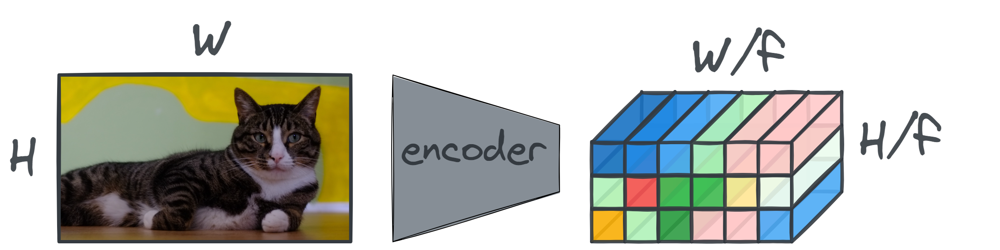

Meta recently released Chameleon, an early-fusion multimodal model both ingesting and producing text and image tokens. Early-fusion is only possible by having a discrete representation of both text and images1. Text is easy, we can use a byte-pair encoder to chunk up text and get both byte level characters as subwords in discrete form.
1 define early fusion better
How do we get a discrete representation of images? One approach is called image tokenization, and it is gaining a lot of traction recently. In this post we will be discussing a series of papers released since 2021 on image tokenization and how image tokenization is incorporated into multimodal models such as PaliGemma, ….
Taming Transformers
We will be focusing only on the vector-quantized variational autoencoder (VQ-VAE) and its Generative Adversarial network (VQ-GAN) extension for image tokenization. As far as I’ve seen, these are the only approaches that seem to work in practice. In this framework, we have a codebook of fixed size, with \(K\) entries each of size \(D\)2.

To compress an image of my cat (\(H \times W\) in size) into a discrete sequence of \(N\) tokens, we first forward it through the encoder of the VQ-GAN. The encoder has a downsampling ratio \(f\), meaning the resulting bottleneck features will be of size \(\frac{H}{f} \times \frac{W}{f} \times D\).

There is no constraint in place to force the top-left feature vector to be related to the top-left of the input image, but given patchifying in transformers and receptive fields in convolutional neural networks (CNNs), it is highly likely to be the case. Either architecture is fine for the VQ-GAN, but I think typically the CNN is given preferrence given its inductive biases for images.
Next, each of the feature vectors in this grid of size \(D\) will be replaced with its nearest code point in the code book. This is the quantization step!
Ofcourse, what we have right now is just a set of feature vectors from our codebook. We can also ‘unroll’ these and add the codebook index of each feature vector alongside it. What we get out of this, is simply a sequence of indices that ‘represent’ one image! So the tokenization is complete.
With this encoder/tokenizer, we can train an autoregressive transformer model to predict the next token and (hopefully) learn the underlying distribution represented by these token indices. However, to synthesize images, we will need to know the reverse process. That is, we need the decoder. We take a sequence of predicted tokens, look these tokens up in the codebook, reshape it to the required bottleneck size and forward it through the decoder:
This whole process is dependent on the VQ-GAN having a low reconstruction error, otherwise our generations won’t be faithful and will contain artefacts.
On the Issue of Compressability
- https://x.com/davidad/status/1801979788539875462
These \(N\) tokens do not have to conform to some spatial location. For example, token 1 is not directly mapped from the top-left of the image. Typically, the mapping is performed by an encoder-decoder model that learned to compress the image in it’s bottleneck.